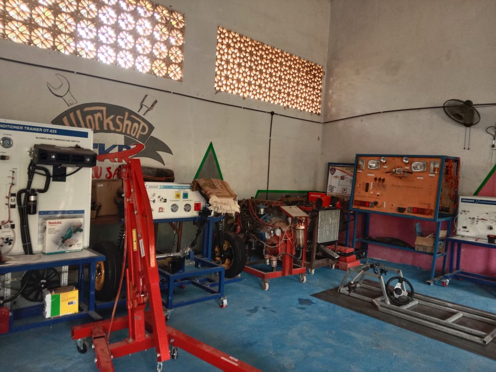
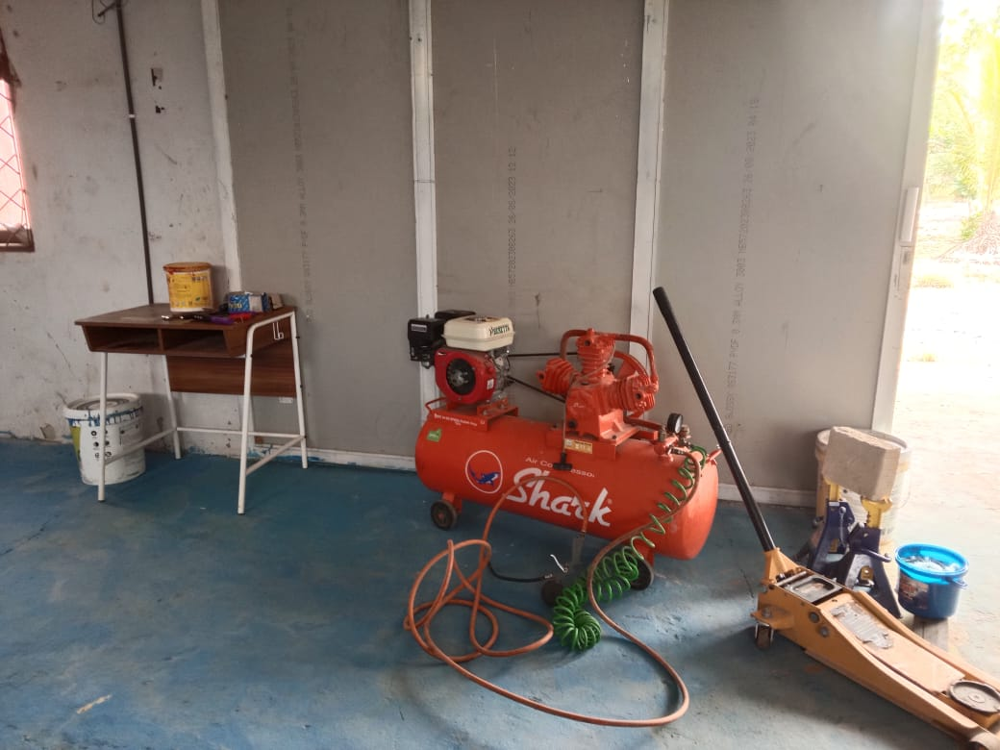
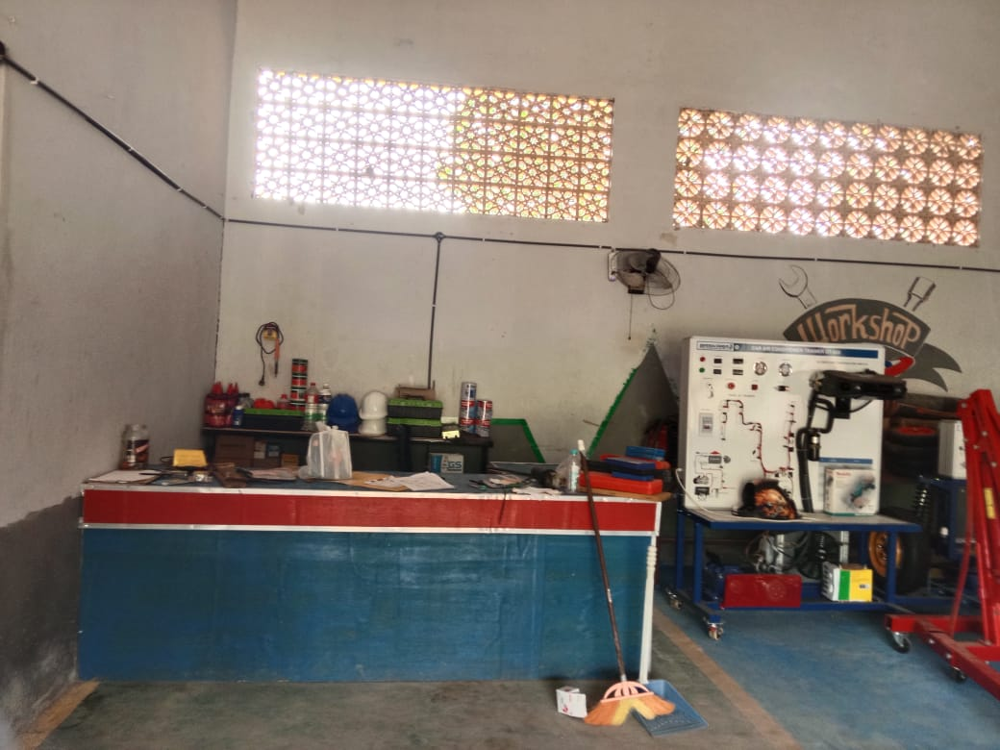
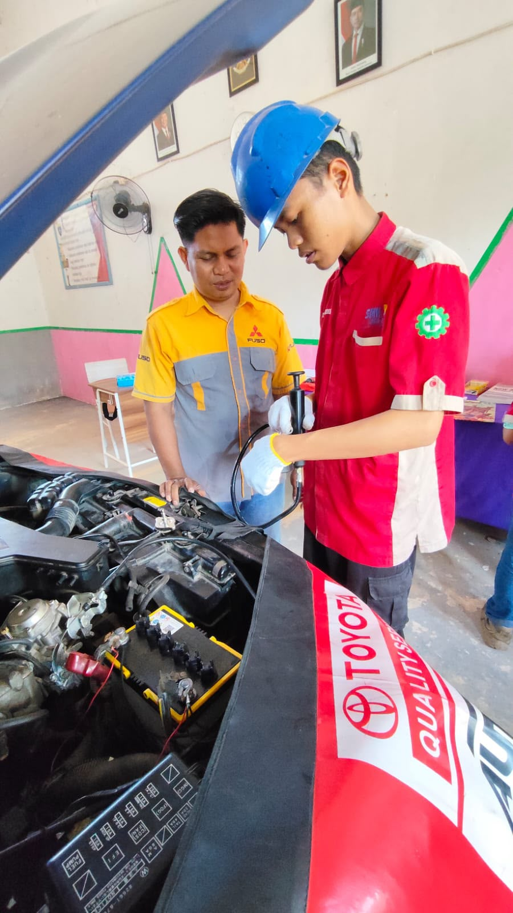
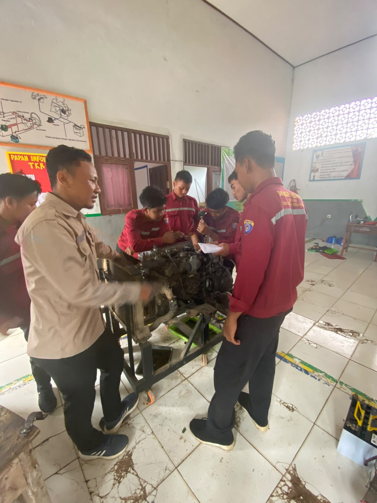
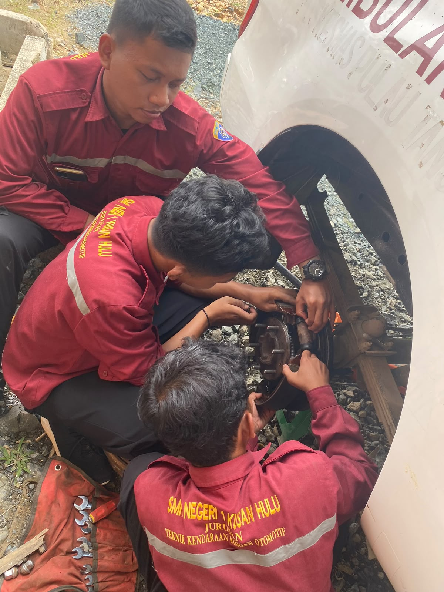
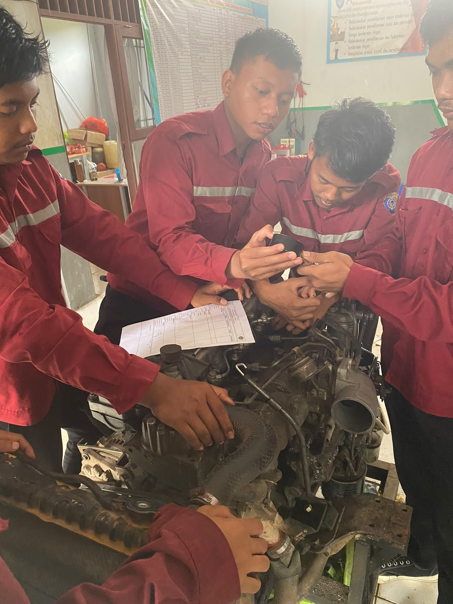
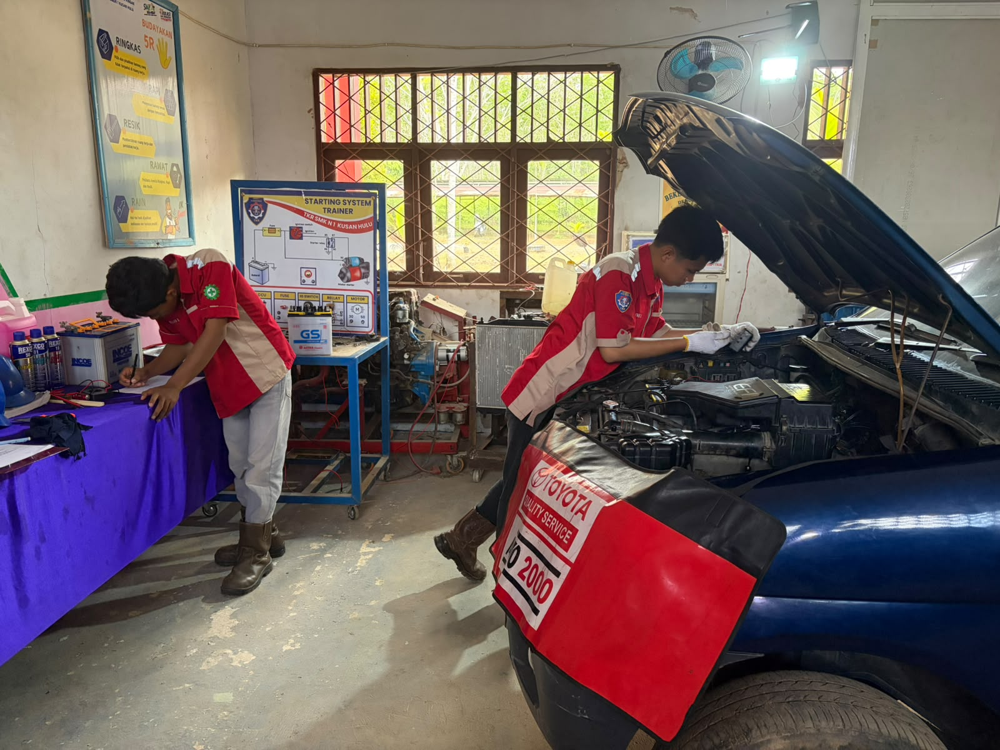
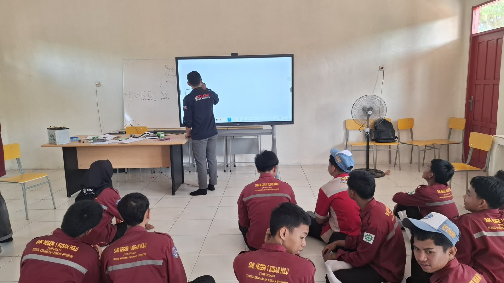
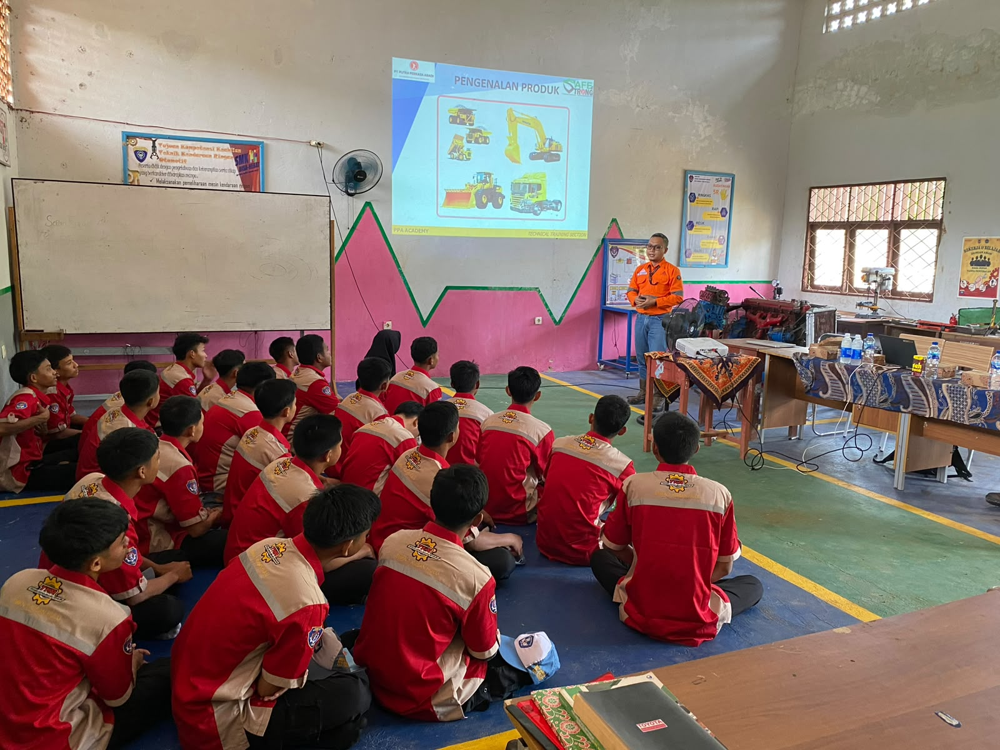

Program Keahlian Teknik Kendaraan Ringan

Mengenal Program TKR
Program Keahlian Teknik Kendaraan Ringan berfokus pada pengembangan pengetahuan dan keterampilan di bidang otomotif. Peserta didik diperkenalkan pada berbagai sistem kendaraan ringan, proses perawatan, pemeriksaan, serta perbaikan komponen kendaraan.
Kompetensi yang Dipelajari
01. Dasar-Dasar Otomotif
Mengenal prinsip kerja kendaraan, fungsi komponen, dan dasar teknologi otomotif.
02. Perawatan Kendaraan
Mempelajari pemeriksaan dan perawatan berkala pada berbagai komponen kendaraan ringan.
03. Sistem Mesin dan Kelistrikan
Mengenal sistem kerja mesin serta komponen kelistrikan pada kendaraan.
04. Pemeriksaan dan Perbaikan
Memahami proses pemeriksaan komponen dan dasar penanganan kerusakan kendaraan.
Tenaga Pendidik dan Kependidikan Jurusan
Tenaga yang berperan dalam pengelolaan dan pembelajaran program keahlian.
Dian Adibowo, S.T.
Kepala Program Keahlian
Muhammad Sauqillah, S.T.
Guru Produktif
Fajar
Juru Bengkel
Fasilitas Program Keahlian

Area Bengkel TKR

Peralatan Bengkel

Peralatan Praktik Otomotif
Dokumentasi Kegiatan
Kegiatan Praktik Siswa





Kegiatan Belajar-Mengajar

